Story
Please Check back later 😊
I greet you this day,
First: read the notes including the Teacher-Student scenarios.
Second: view the videos.
Third: solve the questions/solved examples.
Fourth: check your solutions with my thoroughly-explained solutions.
Fifth: check your answers with the calculators as applicable.
The Wolfram Alpha widget (many thanks to the developers) are used for the calculators.
Comments, ideas, areas of improvement, questions, and constructive criticisms are welcome.
You may contact me.
If you are my student, please do not contact me here. Contact me via the school's system.
Thank you for visiting.
Samuel Dominic Chukwuemeka (Samdom For Peace) B.Eng., A.A.T, M.Ed., M.S
Students will:
(1.) Discuss rational functions.
(2.) Analyze rational functions.
(3.) Write rational functions from intercepts and asymptotes.
(4.) Graph rational functions using technology.
(5.) Transform rational functions.
(6.) Solve problems on rational functions.
(7.) Solve applied problems on rational functions.
(8.) Solve problems on rational functions using technology including Texas Instruments calculators.
Skills Measured/Acquired
(1.) Use of prior knowledge
(2.) Critical thinking
(3.) Interdisciplinary connections/applications
(4.) Technology (using TI-84 Plus and Graphing Calculators among others)
(5.) Active participation through direct questioning
(6.) Research
Please Check back later 😊
Bring it to Philosophy/Psychology/English Language: rational being, irrational being
Bring it to Arithmetic: fraction, division, quotient, ratio, rational number, irrational number
Bring it to Algebra: function, polynomial, rational function, domain, range, intercept,
x-intercept,
y-intercept, zeroes, asymptote, vertical asymptote, horizontal asymptote, slant asymptote, oblique
asymptote,
break, discontinuity, removable discontinuity, nonremovable discontinuity, asymptotic discontinuity,
infinite discontinuity, hole, gap,
A ratio is a comparison of two or more values.
A rational number is any number that can be written as a fraction where the denominator is not
equal to zero.
OR
A rational number is a ratio of two integers where the denominator is not equal to zero.
OR
A rational number is a number that can be written as:
$\dfrac{c}{d}$ where $c, d$ are integers and $d \neq 0$
It can be an integer.
It can be a terminating decimal. Why?
It can be a repeating decimal. Why?
It cannot be a non-repeating decimal. Why?
Ask students to tell you what happens if the denominator (say d) is zero.
An irrational number is a number that cannot be expressed as a fraction, terminating decimal, or
repeating
decimal.
When you compute irrational numbers, they are non-repeating decimals.
A polynomial is a function that is a combination of constants and/or variables,
and in which the variable(s) do not have negative exponents or fractional exponents.
The standard form of a polynomial is: $f(x) = cx^n + dx^{n - 1} + ex^{n - 2} + ... + k$
where x is the variable and c, d, e, f are constants
A polynomial is in standard form if it is written in descending order of exponents of the variable.
The Domain of a function is the set of all the input values that when substututed in the
function,
gives an output.
The Range of a function is the set of all the output values of the function.
x-intercept is the point where the graph touches/crosses the x-axis
y-intercept is the point where the graph crosses the y-axis
A rational function is a ratio of two polynomials where the denominator is not zero.
It can also be defined as a quotient of two polynomials where the denominator is not zero.
A proper rational function is a rational function whose degree of the numerator is less than the degree
of the denominator.
An improper rational function is a rational function whose degree of the numerator is greater than or
equal to the degree of the denominator.
A vertical asymptote of a graph is the vertical line at a specific value of the input,
say x = k where the graph/output approaches positive infinity or negative infinity as the input
approaches that
specific value, k from either the left or the right.
A horizontal asymptote is the horizontal line say y = k where the graph/output approaches
the specific
value, k as the input increases or decreases without bound.
A slant asymptote, also known as an oblique asymptote as the line or curve that the
graph/output approaches as the input increases
or decreases without bound.
A rational function is a ratio of two polynomials where the denominator is not zero.
Teacher: Alternatively, can we say that: a rational function is a ratio of two functions?
Student: I guess so.
Polynomials are functions.
So, we can also define it as a ratio of two functions.
Teacher: Are you sure?
Student: Hmmmm...well, not really.
I take that back.
All polynomials are functions. However, not all functions are polynomials.
So, we just need to define it as it is: a ratio of two polynomials
Teacher: That is correct.
A rational function is expressed as:
$
f(x) = \dfrac{m(x)}{n(x)} \\[5ex]
$
where:
$f(x)$ is the rational function
$m(x)$ is the numerator polynomial function
$n(x)$ is the denominator polynomial function and $n(x) \ne 0$
Student: Is it necessary that we include that condition...the denominator is not equal to
zero
when we define a rational function?
Teacher: It is highly recommended.
Because that is a necessary condition.
I would not take off points if you do not include it. However, it is highly recommended that you do.
Student: Why is the condition?
Teacher: May you perform this operation on your calculator: $3 \div 0$?
What is the result?
Student: It displays an E...an error
Teacher: Yes.
We cannot divide something by nothing.
Neither can we divide nothing by nothing. $0 \div o$
Neither can we create something out of nothing. 😊
Only GOD can do that.
So, we have a condition for a rational function: the denominator must be non-zero.
This is a restriction on the domain of the function.
Review the domain and range of functions as necessary (Relations and Functions)
The domain of a rational function will include all those values besides the values that will make the
denominator to
be zero.
Teacher: As mathematicians, we are also scientists.
This implies that we are...
Student: inquisitive
Teacher: Yes.
Say that we have this rational function: Example 1:
$
y = \dfrac{1}{x} \\[5ex]
$
By the way, that is the parent function of rational functions.
We know the denominator cannot be equal to ...
Student: zero
Teacher: But, we are curious on what happens to the rational function as we approach (get
closer and closer)
to zero.
In other words, what will happen to the output, $y$ as the input, $x$ approaches zero?
We know that when the input is zero, there will certainly be no output.
But we are inquisitive on how the output is affected as we approach the input value of zero?
Let us keep in mind that we can approach zero either from the left or from the right.
Approaching zero from the left: As $x \rightarrow 0^{-}$, what happens to $y$?
Approaching zero from the right: As $x \rightarrow 0^{+}$, what happens to $y$?
It would be helpful to use a Table of Values to represent these values.
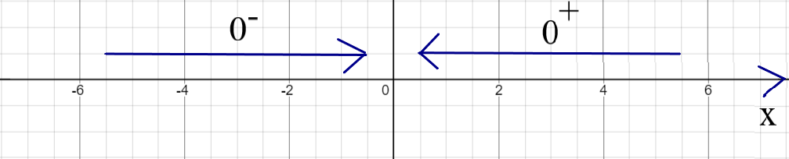
| $x$ | $y = \dfrac{1}{x}$ | $x$ | $y = \dfrac{1}{x}$ | |
|---|---|---|---|---|
| $-0.1$ | $-10$ | $0.1$ | $10$ | |
| $-0.01$ | $-100$ | $0.01$ | $100$ | |
| $-0.001$ | $-1,000$ | $0.001$ | $1,000$ | |
| $-0.0001$ | $-10,000$ | $0.0001$ | $10,000$ | |
| $-0.00001$ | $-100,000$ | $0.00001$ | $100,000$ | |
| As $x \rightarrow 0^{-}$, $y \rightarrow -\infty$ | As $x \rightarrow 0^{+}$, $y \rightarrow \infty$ | |||
From the Table of Values:
We notice:
(1.) As x approaches zero from the left, y approaches negative infinity
(y values keep increasing in the negative direction)
(2.) As x approaches zero from the right, y approaches negative infinity
(y values keep increasing in the positive direction)
Let us draw the graph of the Table of Values.
We do know that $y = f(x)$
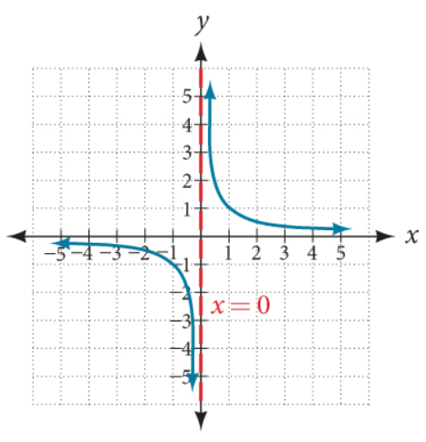
From the Graph:
We notice:
(1.) The positive y-values keep going up (as indicated by the up arrow: $\uparrow$) along the
vertical axis (y-axis)
However, it never touches the vertical axis. It just keeps going up along it.
(2.) The negative y-values keep going down (as indicated by the down arrow: $\downarrow$) along
the
vertical axis (y-axis)
However, it never touches the vertical axis. It just keeps going down along it.
(3.) This showns that there is a break or discontinuity of the y-values as the
$x-values$ approach zero
from the left and from the right.
In other words, as we move from left to right across the graph based on the x-values, for all
x-values less than
zero, the y-values keep decreasing; then there is a discontinuity at zero; and for all
x-values greater than zero,
the y-values keep increasing.
So, on the vertical axis/y-axis (x = 0), we notice the discontinuous straight vertical line.
This discontinuity at x = 0 or on the vertical line is known as a vertical asymptote.
So, a vertical asymptote creates a nonremovable discontinuity (the dotted vertical
line) which corresponds to a specific value of x
This means that whenever we want to find the vertical asymptote, we are looking for the value of
x at which we notice a nonremovable discontinuity represented by a dotted
vertical line (though the line is not visible in several graphing calculators).
Student: Questions, Sir
Teacher: Go for it
Student: First, how and why did you decide to use zero as the value of reference?
How did you know there would be discontinuity at $x = 0$
Teacher: By setting the denominator to zero and solving for the value of $x$
Student: Will this approach work for all rational functions?
For example, what if we have: Example 2:
$
y = \dfrac{3}{x - 5} \\[5ex]
$
Are you saying there would be discontinuity at $x = 5$?
There would be a dotted vertical line at $x = 5$?
Teacher: Yes Sir
Student: And this is because the $y-values$ approach negative infinity and positive infinity
at that point?
Teacher: As it gets closer to the x-value...as it approaches that $x-value$...$x = 5$
from the left and from
the right.
The approach of the $y-values$ to negative infinity and positive infinity must not be in that order.
It just depends
on the rational function.
Student: I didn't get what you just said.
Teacher: Here is what I mean.
If we have:
$y = \dfrac{1}{x}$
As $x \rightarrow 0^{-}$, $y \rightarrow -\infty$
As $x \rightarrow 0^{+}$, $y \rightarrow \infty$
Student: I get that.
Teacher: But if we have:
$y = -\dfrac{1}{x}$
Student: It will be the other way around for the $y-values$ because of the negative sign in
the function.
Teacher: That is correct.
As $x \rightarrow 0^{-}$, $y \rightarrow \infty$
As $x \rightarrow 0^{+}$, $y \rightarrow -\infty$
Student: It makes sense.
So, regardless of the rational function; the $y-values$ will always approach infinity
(negative or positive infinity in either direction) as it approaches the vertical asymptote from the
left and from the right?
Teacher: That is correct.
Student: Does it mean that every rational function have a vertical asymptote?
Teacher: No.
Some rational functions have no vertical asymptotes, some have one, some have two, some have three,
etc.
Do you understand what I just said?
Student: Yes, I do.
For example: a rational function will have two asymptotes if the denominator is a quadratic
expression?
Teacher: Yes...if that rational function is already simplified and it has a quadratic
expression.
You get what I mean?
Student: So, we have to first simplify the rational function before finding the vertical
asymptote?
Teacher: Yes.
Student: Second, you mentioned nonremovable discontinuity
So, I guess there is a removable discontinuity?
Teacher: That is correct.
Student: What is the difference between the two?
Teacher: First: based on their names: a nonremovable discontinuity cannot be removed while a
removable discontinuity
can be removed (can be cancelled out).
Second: a nonremovable discontinuity (also known as an asymptotic discontinuity or infinite
discontinuity) creates
breaks/gaps in the graph while a removable discontinuity creates holes (open circle) in the graph.
Student: I have seen an example of nonremovable discontinuity...the example we just did.
May you please give example of removable discontinuity?
Teacher: Sure.
For the rational function: Example 3:
$
y = \dfrac{x^2 - 1}{x^2 - 2x - 3} \\[5ex]
Simplify\;\;means: \\[3ex]
Factor\;\;the\;\;numerator\;(Difference\;\;of\;\;Two\;\;Squares) \\[3ex]
Factor\;\;the\;\;denominator\;(Quadratic\;\;Trinomial) \\[3ex]
y = \dfrac{(x + 1)(x - 1)}{(x + 1)(x - 3)} \\[5ex]
$
If $(x + 1)$ is not in the numerator, we would have two vertical asymptotes:
one at $x = -1$ and another at $x = 3$ (by setting $x + 1 = 0$ and $x - 3 = 0$ and solving for $x$)
That would have created two nonremovable discontinuities
But, we do have $(x + 1)$ in the numerator, as well as in the denominator
So, we cross it out
That leaves us with only one nonremovable discontinuity at $x = 3$
But we will not forget what we just removed (crossed out), so we will also have one removable
discontinuity
at $x = -1$
The nonremovable discontinuity leaves a break.
The removable discontinuity leaves a hole.
Let us see the graph.
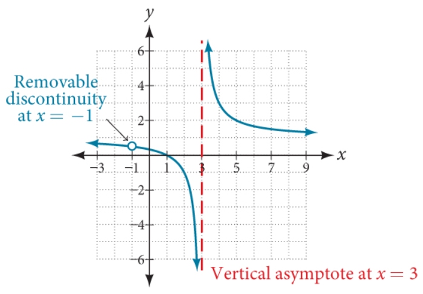
Based on our discussions, we define a vertical asymptote as the vertical line at a specific value
of the input,
say x = k where the output approaches positive infinity or negative infinity as the input
approaches that specific
value, k from either the left or the right.
$
As\;\;x \rightarrow k^{-},\;\; y \rightarrow -\infty \;\;or\;\; y\rightarrow \infty \\[3ex]
As\;\;x \rightarrow k^{+},\;\; y \rightarrow -\infty \;\;or\;\; y\rightarrow \infty \\[3ex]
$
Teacher: We have been inquisitive about the behavior of the output when the input approaches
a certain
value
from the left and from the right.
Is there something else we may need to be inquisitive about?
Student: Well, I guess since we have a vertical asymptote, we may as well have a horizontal
asymptote.
So, we need to be inquisitive about what we lead us to get a horizontal asymptote.
Teacher: Interesting.
How do we do that?
What should we consider?
Student: I'm not sure.
Teacher: Let's try again.
First Case: the behavior of the output as the input approaches a specific value from the left
and from
the right.
Second Case: the behavior of the output as the input ...
Student: ... does not approach a specific value from the left and from the right.
Teacher: Okay, that works...
In other words, when the input increases without bound (increasing from the right) and when the
input decreases
without bound (decreasing from the left)
So, we are inquisitive about the behavior of the output when the input increases or decreases
without bound.
As we did with the first case, let us find out using a Table of Values.
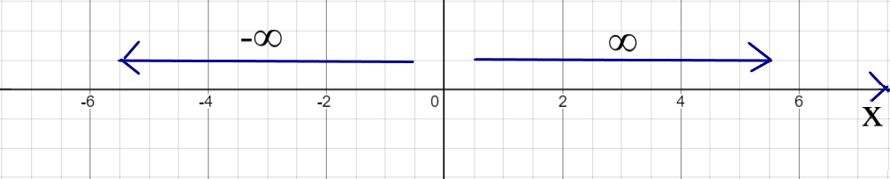
| $x$ | $y = \dfrac{1}{x}$ | $x$ | $y = \dfrac{1}{x}$ | |
|---|---|---|---|---|
| $-1$ | $-1$ | $1$ | $1$ | |
| $-10$ | $-0.1$ | $10$ | $0.1$ | |
| $-100$ | $-0.01$ | $100$ | $0.01$ | |
| $-1,000$ | $-0.001$ | $1000$ | $0.001$ | |
| $-100,000$ | $-0.0001$ | $100,000$ | $0.0001$ | |
| As $x \rightarrow -\infty$, $y \rightarrow -0$ | As $x \rightarrow \infty$, $y \rightarrow 0$ | |||
From the Table of Values:
We notice:
(1.) As x decreases without bound, y approaches negative zero
Negative zero is the same as zero, so: as x decreases without bound, y approaches zero
(2.) As x increases without bound, y approaches zero
Either way the x goes, y approaches zero.
Let us draw the graph of the Table of Values.
We do know that $y = f(x)$
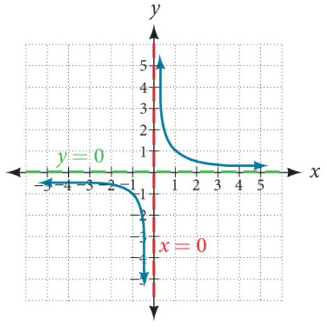
From the Graph:
We notice:
(1.) The value of y approaches zero as x increases or decreases without bound.
This is indicated by the green dotted horizontal line.
It is the horizontal line becaquse the values of x are zero on the horizontal line.
It is a dotted line because y does not equal to zero. It keeps approaching zero but does not
equal zero.
So, there is a discontinuity at $y = 0$
This discontinuity at $y = 0$ or on the horizontal line is known as a horizontal asymptote.
However, it is important to note that the horizontal asymptote does not always create a discontinuity.
In this case, it did. But, it is not always the case.
As a matter of fact, in some cases, the graph crosses the horizontal asymptote.
Ask students to compare and contrast the vertical asymptote (VA) and the horizontal asymptote (HA)
Here are some of the points to note for the contrast.
Recall that the graph neither touches or crosses the vertical asymptote.
Also, the vertical asymptote always creates a discontinuity.
On the other hand:
The graph can sometimes cross the horizontal asymptote.
Horizontal asymptote does not always create a discontinuity.
Here are some of the points to note for the compare.
Some rational functions have no vertical nor horizontal asymptotes.
Recap: $y = \dfrac{1}{x} = \dfrac{x^0}{x^1}$ is a proper rational function because the degree of
the numerator is less than the degree of the
denominator.
If a rational function is proper, then y = 0 is a horizontal asymptote.
We define a horizontal asymptote as the horizontal line say y = k where the graph/output
approaches a specific
value, k as the input increases or decreases without bound.
$
As\;\;x \rightarrow -\infty,\;\; y \rightarrow k \\[3ex]
As\;\;x \rightarrow \infty,\;\; y \rightarrow k \\[3ex]
$
An important characteristic of slant asymptotes is that they also describe the end behavior of a graph.
Looking at what we have learned so far:
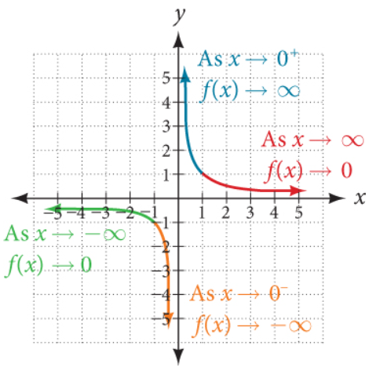
Student: Mr. C, I have some questions.
Teacher: What's up?
Student: First, may you give an example where the graph touches or crosses the horizontal
asymptote?
Teacher: I would not say, "touch"...I understand you are using the terms we did in Polynomial
I would say: "cross"
Student: But, if a graph crosses the horizontal asymptote, does it not mean that it touched
it?
Teacher: Technically, yes. But let us use the right term.
Graphs of rational functions either approaches asymptotes (cases of vertical and horizontal
asymptotes) or
crosses it (case of horizontal asymptote)
We do have another type of asymptote: slant or oblique or nonlinear asymptote.
We shall discuss those later.
But, let's answer your question.
Say we have this function: Example 4:
$
y = \dfrac{x - 3}{x^2 + 1} \\[5ex]
HA: y = 0 \\[3ex]
$
But the graph crosses the horizontal asymptote in the example
How?
Let us equate the function to the horizontal asymptote
In other words, let us equate the function to zero
$
\dfrac{x - 3}{x^2 + 1} = 0 \\[5ex]
x - 3 = 0(x^2 + 1) \\[3ex]
x - 3 = 0 \\[3ex]
x = 3 \\[3ex]
$
In this example, the graph crosses the horizontal asymptote at $x = 3$
There is no discontinuity caused by the horizontal asymptote.
Student: Is there a vertical asymptote?
Teacher: What do you think?
Work it out and let me know.
Student: There is no vertical asymptote because
$
set\;\;denominator = 0 \\[3ex]
x^2 + 1 = 0 \\[3ex]
x^2 = -1 \\[3ex]
x = \pm \sqrt{-1} \\[3ex]
$
This gives imaginary numbers.
Teacher: That is correct.
Student: You know what...I had wanted to ask you this question...to give an example of a
rational function
that does not have a vertical asymptote
Glad I figured it out now.
Teacher: Yes, any rational function whose denominator is of the form $x^2 +
positive\;\;number$ does not
have a vertical asymptote.
Student: Okay, cool.
How will the graph of this function look like?
Teacher: Let's see. 😊
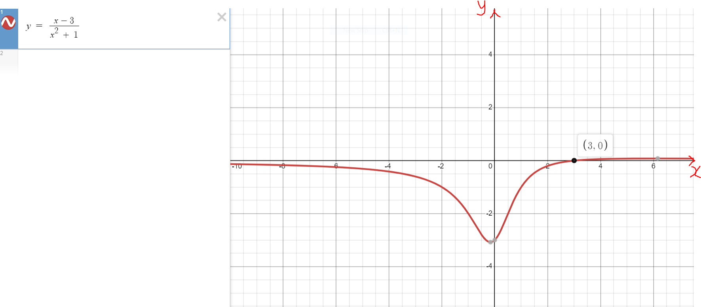
Student: My next question is...
So far, we have done examples where the horizontal asymptote is zero
Teacher: To say it well: where the horizontal asymptote is $y = 0$
Student: Okay, but you know what I mean
Can we do examples where the horizontal asymptote is not $y = 0$
Also, you mentioned earlier that in some cases; there is no horizontal asymptote
Can you give an example of that case as well?
Teacher: Sure.
Let us begin with the case where the horizontal asymptote is not zero.
Example 5:
$
y = \dfrac{2x^2 - 3}{x^2 + 1} \\[5ex]
HA: y = 2 \\[3ex]
$
Student: How do you know that the horizontal asymptote is $y = 2$?
Teacher: Good question.
To determine the horizontal asymptote:
(1.) Express the numerator in standard form (like we did in Polynomials)
(2.) Express the denominator in standard form (like we did in Polynomials)
(3.) (a.) If the degree of the numerator is less than the degree of the denominator, the horizontal
asymptote is
$y = 0$
(b.) If the degree of the numerator is the same as the degree of the denominator, the horizontal
asymptote is:
$y$ equals the quotient of the leading coefficient of the numerator to the leading coefficient of
the denominator
But if the degree of the numerator is greater than the degree of the denominator:
"Wanna" take a guess?
Student: I guess...that is the case where there is no horizontal asymptote?
Teacher: Correct.
(c.) If the degree of the numerator is greater than the degree of the denominator, the graph does
not have a horizontal asymptote.
To answer your question more specifically; let us make a Table of Values for that function and see
where the decrements and the increments of x lead to...
Please see the steps on using the Texas Instruments (TI) calculator here: Question Number (4.) in
Make a
Table of Values with the TI calculator
If topic is taught in the traditional classroom, review the steps and walk students through it.
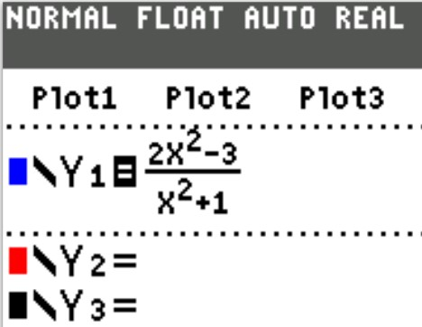
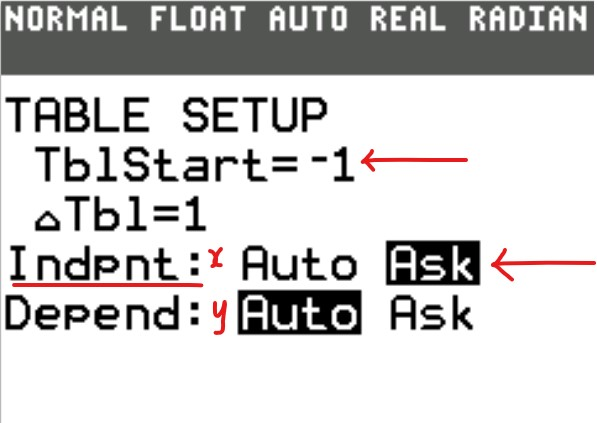
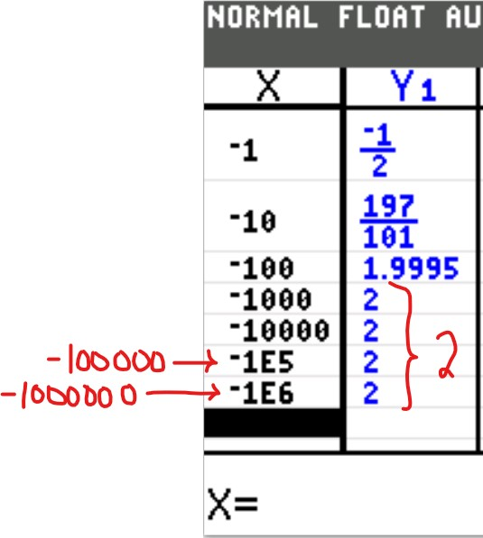
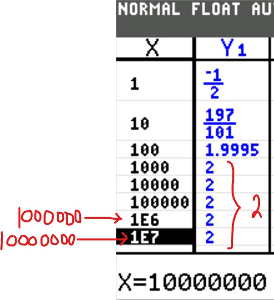
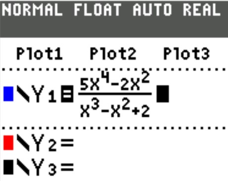
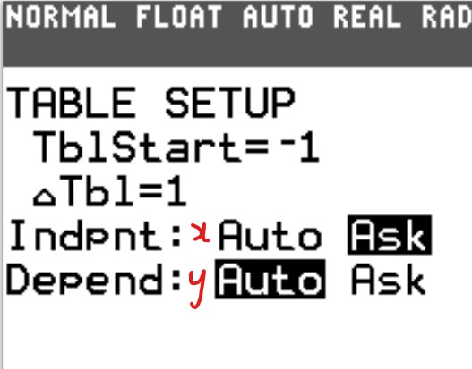
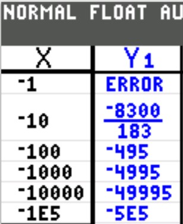
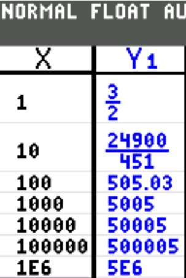
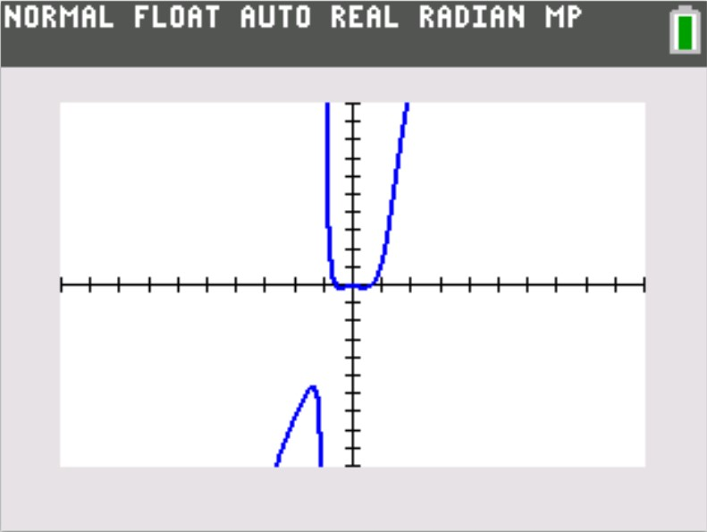
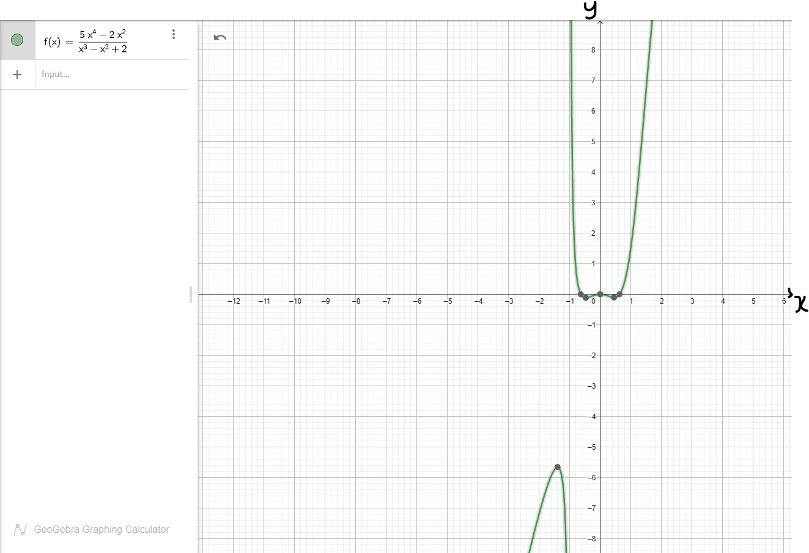
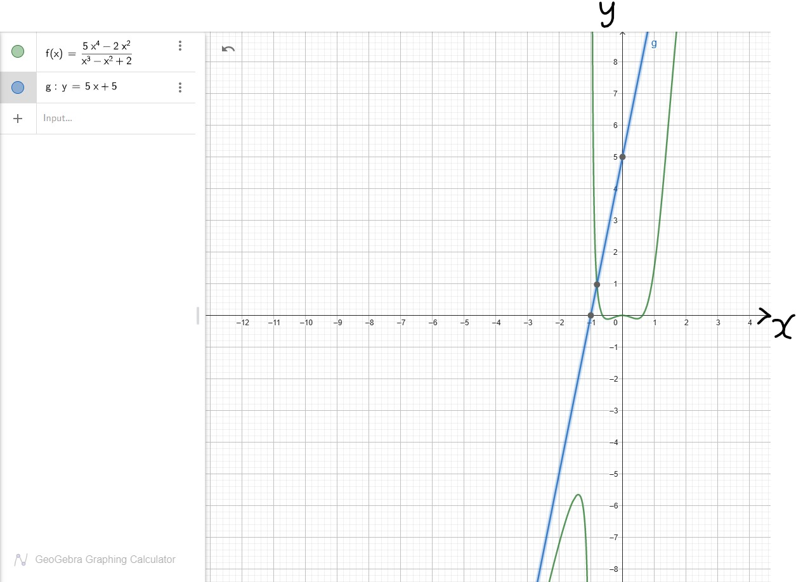
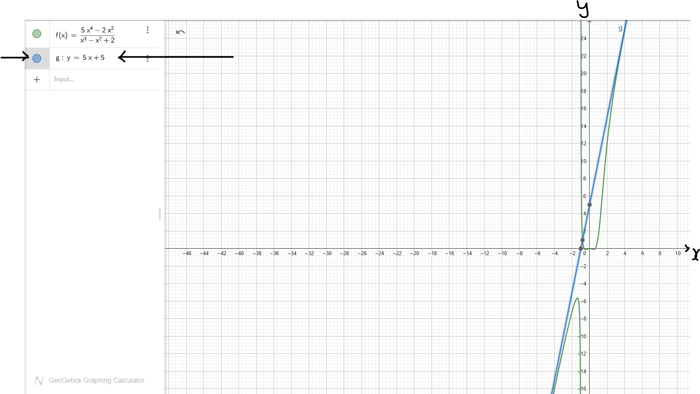
To Find the Vertical Asymptote (VA):
(1.) Simplify the function
(2.) Set the denominator to zero (if applicable after simplifying the function)
(3.) Solve for the value of $x$
(4.) $VA: x = value$
To Find the Horizontal Asymptote (HA):
(1.) Arrange the numerator in standard form
(2.) Arrange the denominator in standard form
(3.) If the degree of the numerator is less than the degree of the denominator, $HA: y = 0$
(4.) If the degree of the numerator is the same as the degree of the denominator,
$HA: y =
\dfrac{leading\;\;coefficient\;\;of\;\;the\;\;numerator}{leading\;\;coefficient\;\;of\;\;the\;\;denominator}$
If the degree of the numerator is one greater than the degree of the denominator, then onto the
Slant Asymptote (or
Oblique Asymptote)
To Find the Slant Asymptote (SA):
If the degree of the numerator is one greater than the degree of the denominator,
$SA: y = quotient\;\;of\;\;\dfrac{numerator}{denominator}$
To Find the $x-intercept$:
(1.) Set $y = 0$
(2.) Solve for the value of $x$
(3.) $x-intercept = (value, 0)$
To Find the $y-intercept$:
(1.) Set $x = 0$
(2.) Solve for the value of $y$
(3.) $y-intercept = (0, value)$
To Find the domain:
What are the values of the input, x that will not give any output, y
Remove those values.
The set of all the input values that will give results when those input values are substituted in the
functions is
the domain
For a rational function: the denominator must be non-zero.
No division by zero.
$
f(x) = \dfrac{numerator}{denominator} \\[5ex]
denominator \ne 0 \\[3ex]
$
(You cannot divide something by nothing, neither can you divide nothing by nothing.)
So, we have to find all the values of x for which the denominator is not zero.
To Find the range:
What are all the likely results that could be got from all those input values?
The set of all those output values that could be got when those input values are substituted in the
functions is
the range.
We can graph rational functions using at least two approaches.
The approaches are:
(1.) Graphing the Rational Function using the basic steps.
(2.) Graphing the Rational Function by Transforming it from the Parent Function.
The first approach is discussed in this section.
The second approach is discussed in the next section.
Steps in Graphing a Rational Function:
(1.) Simplify the function (if applicable)
(2.) Determine the x-intercept and the y-intercept
(3.) Determine the vertical asymptote, horizontal asymptote, and/or slant asymptote as applicable
(4.) Determine whether the graph crosses the horizontal asymptote (as applicable)
(5.) Obtain more points.
Use both negative and positive x-values
Try as much as possible to use integer points/result.
If not possible, use exact decimals that are one decimal place.
Obtain as many points as possible to see the end behavior of the graph.
Draw a Table of Values that includes all the points found so far.
(6.) Sketch the graph.
Let us do some examples.
Example Graph 1: Simplify and graph the following rational function:
$
f(x) = \dfrac{2x}{x - 2} - \dfrac{x - 1}{x^2 - 3x + 2} \\[5ex]
$
Solution Graph 1
1st Step: Find the least common denominator (LCD)
$
x - 2 = x - 2 \\[3ex]
x^2 - 3x + 2 = (x - 2)(x - 1) \\[3ex]
LCD = (x - 2)(x - 1) \\[3ex]
$
2nd Step: Simplify the fractions
$
\dfrac{2x}{x - 2} - \dfrac{x - 1}{x^2 - 3x + 2} \\[5ex]
\dfrac{2x}{x - 2} - \dfrac{x - 1}{(x - 2)(x - 1)} \\[5ex]
\dfrac{2x(x - 1)}{(x - 2)(x - 1)} - \dfrac{x - 1}{(x - 2)(x - 1)} \\[5ex]
\dfrac{2x(x - 1) - 1(x - 1)}{(x - 2)(x - 1)} \\[5ex]
\dfrac{(x - 1)(2x - 1)}{(x - 2)(x - 1)} \\[5ex]
\dfrac{2x - 1}{x - 2} \\[5ex]
\implies \\[3ex]
y = \dfrac{2x - 1}{x - 2} \\[5ex]
$
Now onto the Graphing
1st Step: Determine the intercepts
$
\underline{x-intercept} \\[3ex]
Set\;\;y = 0 \;\;and\;\;solve\;\;for\;\;x \\[3ex]
0 = \dfrac{2x - 1}{x - 2} \\[5ex]
\dfrac{2x - 1}{x - 2} = 0 \\[5ex]
2x - 1 = 0(x - 2) \\[3ex]
2x - 1 = 0 \\[3ex]
2x = 1 \\[3ex]
x = \dfrac{1}{2} \\[5ex]
x-intercept = \left(\dfrac{1}{2}, 0\right) \\[5ex]
\underline{y-intercept} \\[3ex]
Set\;\;y = 0 \;\;and\;\;solve\;\;for\;\;x \\[3ex]
y = \dfrac{2(0) - 1}{0 - 2} \\[5ex]
y = \dfrac{0 - 1}{-2} \\[5ex]
y = \dfrac{-1}{-2} \\[5ex]
y = \dfrac{1}{2} \\[5ex]
y-intercept = \left(0, \dfrac{1}{2}\right) \\[5ex]
$
2nd Step: Determine the asymptotes
$
\underline{Vertical\;\;Asymptote} \\[3ex]
Set\;\;the\;\;denominator\;\;to\;\;zero\;\;and\;\;solve\;\;for\;\;x \\[3ex]
x - 2 = 0 \\[3ex]
x = 2 \\[3ex]
VA: x = 2 \\[3ex]
\underline{Horizontal\;\;Asymptote} \\[3ex]
degree\;\;numerator = degree\;\;of\;\;denominator = 1 \\[3ex]
HA: y =
\dfrac{leading\;\;coefficient\;\;of\;\;the\;\;numerator}{leading\;\;coefficient\;\;of\;\;the\;\;denominator}
\\[5ex]
HA: y = \dfrac{2}{1} \\[5ex]
HA: y = 2 \\[3ex]
No\;\;Slant\;\;Asymptote \\[3ex]
$
3rd Step: Determine whether the graph crosses the horizontal asymptote (as applicable)
$
Set\;\;the\;\;function\;\;to\;\;the\;\;horizontal\;\;asymptote\;\;and\;\;solve\;\;for\;\;x \\[3ex]
\dfrac{2x - 1}{x - 2} = 2 \\[5ex]
2x - 1 = 2(x - 2) \\[3ex]
2x - 1 = 2x - 4 \\[3ex]
This\;\;is\;\;a\;\;contradiction \\[3ex]
The\;\;graph\;\;does\;\;not\;\;cross\;\;the\;\;horizontal\;\;asymptote \\[3ex]
$
4th Step: Obtain more points.
Use both negative and positive x-values
Try as much as possible to use integer points/result.
If not possible, use exact decimals that are one decimal place.
Obtain as many points as possible to see the end behavior of the graph.
Draw a Table of Values that includes all the points found so far.
$
When\;\;x = -1 \\[3ex]
y = \dfrac{2(-1) - 1}{-1 - 2} \\[5ex]
y = \dfrac{-2 - 1}{-3} \\[5ex]
y = \dfrac{-3}{-3} \\[5ex]
y = 1 \\[5ex]
When\;\;x = -4 \\[3ex]
y = \dfrac{2(-4) - 1}{-4 - 2} \\[5ex]
y = \dfrac{-8 - 1}{-6} \\[5ex]
y = \dfrac{-9}{-6} \\[5ex]
y = 1.5 \\[5ex]
When\;\;x = 1 \\[3ex]
y = \dfrac{2(1) - 1}{1 - 2} \\[5ex]
y = \dfrac{2 - 1}{-1} \\[5ex]
y = \dfrac{1}{-1} \\[5ex]
y = -1 \\[5ex]
When\;\;x = 3 \\[3ex]
y = \dfrac{2(3) - 1}{3 - 2} \\[5ex]
y = \dfrac{6 - 1}{1} \\[5ex]
y = \dfrac{5}{1} \\[5ex]
y = 5 \\[5ex]
When\;\;x = 5 \\[3ex]
y = \dfrac{2(5) - 1}{5 - 2} \\[5ex]
y = \dfrac{10 - 1}{3} \\[5ex]
y = \dfrac{9}{3} \\[5ex]
y = 3 \\[5ex]
$
| $x$ | $y$ |
|---|---|
| $-4$ | $1.5$ |
| $-1$ | $1$ |
| $0$ | $0.5$ |
| $0.5$ | $0$ |
| $1$ | $-1$ |
| $3$ | $5$ |
| $5$ | $3$ |
5th Step: Sketch the graph.
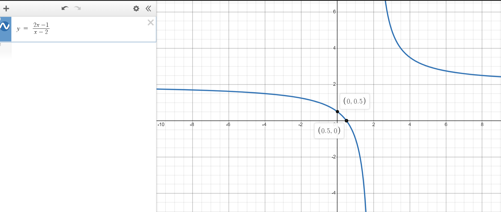
Student: Mr. C, I'm just curious ...
What if I decide to graph the original function as is?
Using only Table of Values?
Teacher: Do you intend to do it manually or with a graphing utility?
Student: Either way?
Teacher: You may do it if you wish...but in the test or exam, you need to simplify the
function
One good reason to simplify the function is to determine any removable discontinuity...remember we
did an
example earlier
But, if you would like to see the graph of the initial function, we can do that using a graphing
calculator.
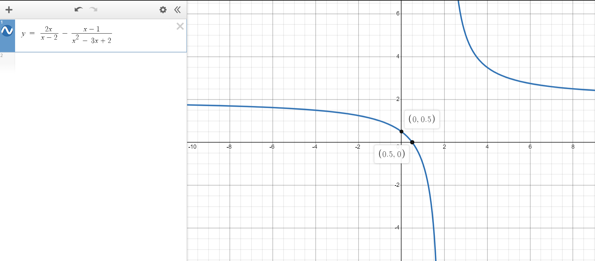
This calculator will:
(1.) Determine the domain of a function.
(2.) Determine the range of a function.
(3.) Write the domain of the function in set notation.
(4.) Write the range of the function in set notation.
(5.) Graph the domain on a number line.
(6.) Graph the range on a number line.
To use the calculator, please:
(1.) Type your function (equation) or expression in the textbox (the bigger textbox).
(2.) Type it according to the examples I listed.
(3.) Copy and paste the function (equation) you typed, into the small textbox of the calculator.
(4.) Click the Submit button.
(5.) Check to make sure it is the correct function or expression you typed.
(6.) Review the answers.
Function:
This calculator will:
(1.) Determine the vertical asymptote.
(2.) Determine the horizontal asymptote (if any).
(3.) Determine the oblique asymptote (if any).
(4.) Graph the function.
To use the calculator, please:
(1.) Assume the function is $f(x)$.
(2.) Type your expression in the textbox: big Textbox.
(3.) Type them according to the examples I listed.
(4.) Delete the default expression in the textbox of the calculator: small textbox.
(5.) Copy and paste the expression you typed, into the textbox of the calculator.
(6.) Click the Submit button.
(7.) Check to make sure that the expression was what you typed.
(8.) Review the answer(s).
Function:
This calculator will:
(1.) Graph a rational function.
NOTE: Please:
(1.) Use only the variable: x
Do not use any other variable.
Even if your rational function has other variables, assume the independent variable to be
x
(2.) Make sure all the fields in the calculator:
Numerator; Denominator; xmin, xmax; ymin, ymax; are enclosed
in parenthesis as seen in the default textboxes (each textbox in the
calculator)
To use the calculator, please:
(1.) Type the numerator function in the big textbox.
(2.) Type the denominator function in the big textbox.
(3.) Type them according to the examples I listed.
(4.) Delete the default function/expression in the numerator textbox of the calculator.
(5.) Delete the default function/expression in the denominator textbox of the calculator.
(6.) Copy and paste the functions you typed, into the numerator and denominator textboxes of the
calculator respectively.
(7.) Type the the minimum and maximum values for the scale for the horizontal axis
(x-axis) in the default textbox of the calculator.
(8.) Type the the minimum and maximum values for the scale for the vertical axis (y-axis)
in the default textbox of the calculator.
(9.) Click the Submit button and Check to make sure that everything you typed is
correct.
(10.) Review the graph.
Numerator:
Denominator:
Coburn, J., & Coffelt, J. (2014). College Algebra Essentials (3rd ed.).
New York: McGraw-Hill
Kaufmann, J., & Schwitters, K. (2011). Algebra for College Students (Revised/Expanded ed.).
Belmont, CA: Brooks/Cole, Cengage Learning.
Lial, M., & Hornsby, J. (2012). Beginning and Intermediate Algebra (Revised/Expanded ed.).
Boston: Pearson Addison-Wesley.
Sullivan, M., & Sullivan, M. (2017). Algebra & Trigonometry (7th ed.).
Boston: Pearson.
Sullivan, M. (2020). Precalculus. (11th ed.). Pearson.
Alpha Widgets Overview Tour Gallery Sign In. (n.d.). Retrieved from http://www.wolframalpha.com/widgets/
Authority (NZQA), (n.d.). Mathematics and Statistics subject resources. www.nzqa.govt.nz. Retrieved
December 14,
2020, from https://www.nzqa.govt.nz/ncea/subjects/mathematics/levels/
CrackACT. (n.d.). Retrieved from http://www.crackact.com/act-downloads/
CSEC Math Tutor. (n.d). Retrieved from https://www.csecmathtutor.com/past-papers.html
Desmos. (n.d.). Desmos Graphing Calculator. https://www.desmos.com/calculator
Elementary, Intermediate Tests and High School Regents Examinations : OSA : NYSED. (2019).
Nysedregents.org. https://www.nysedregents.org/
Geogebra. (2019). Graphing Calculator - GeoGebra. Geogebra.org.
https://www.geogebra.org/graphing?lang=en
GCSE and SQA Exam Past Papers: Revision World. Retrieved April 6, 2022, from
https://revisionworld.com/gcse-revision/gcse-exam-past-papers
JAMB Past Questions, WAEC, NECO, Post UTME Past Questions. (n.d.). Nigerian Scholars. Retrieved February
12, 2022,
from https://nigerianscholars.com/past-questions/
K.C.S.E PAST PAPERS 1996 - 2021. (n.d.). Teacher.co.ke. Retrieved May 20, 2022, from
https://teacher.co.ke/k-c-s-e-past-papers-1996-2021/
Myschool e-Learning Centre - It's Time to Study! - Myschool. (n.d.). https://myschool.ng/classroom
NSC Examinations. (n.d.). www.education.gov.za.
https://www.education.gov.za/Curriculum/NationalSeniorCertificate(NSC)Examinations.aspx
OpenStax. (2022). Openstax.org. https://openstax.org/details/books/algebra-and-trigonometry
Papua New Guinea: Department of Education. (n.d.). www.education.gov.pg.
https://www.education.gov.pg/TISER/exams.html
Past Exam Papers | MEHA. (n.d.). Retrieved May 6, 2022, from http://www.education.gov.fj/exam-papers/
School Curriculum and Standards Authority (SCSA): K-12. Past ATAR Course Examinations. Retrieved March
10, 2022,
from https://senior-secondary.scsa.wa.edu.au/further-resources/past-atar-course-exams
Search | Pearson Qualifications. (n.d.). Qualifications.pearson.com. Retrieved May 10, 2022, from
https://qualifications.pearson.com/en/search.html
TI-SmartViewTM Emulator Software for the TI-84 Plus Family - Texas Instruments - US and Canada. (n.d.).
Education.ti.com. Retrieved May 6, 2022, from
https://education.ti.com/en/software/details/en/ffea90ee7f9b4c24a6ec427622c77d09/sda-ti-smartview-ti-84-plus?msclkid=2fac6524cfb511ecbc87bf63a9cac91b
West African Examinations Council (WAEC). Retrieved May 30, 2022, from
https://waeconline.org.ng/e-learning/Mathematics/mathsmain.html
51 Real SAT PDFs and List of 89 Real ACTs (Free) : McElroy Tutoring. (n.d.).
Mcelroytutoring.com. Retrieved December 12, 2022,
from
https://mcelroytutoring.com/lower.php?url=44-official-sat-pdfs-and-82-official-act-pdf-practice-tests-free